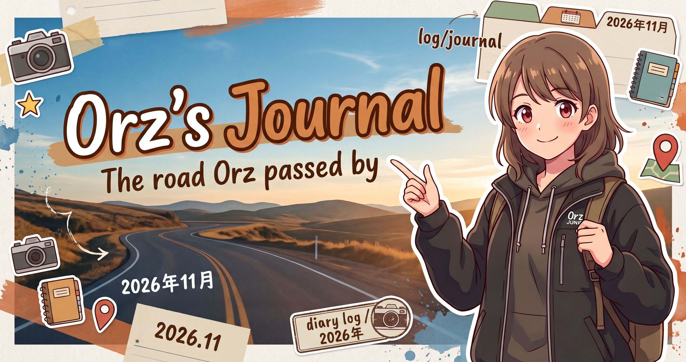

- 2026 年 11 月
-
- 6 日（金）
-
- 2026/11/06 11:11:23 (JST)
特定の誰かを指してるわけでなくても、ステレオタイプ的な批判を人に向けるのはやめとこ。気をつけないとうっかりやってるかも。いや絶対やっちまってるよな。まじで気をつけよ。
だれかを批判をしたいわけじゃないし。
批判の欠片もないテキストを非難してるって勘違いする人がでてくるのは SNS だから仕方ないけど。
もっと自分のテキストを精査しよ。
でも単語に反応して凸してくる人は、どうしても防げんけど。
正直もうちょっときちんと読んでから反応して欲しい。そのために長い文章にしてるんだし。chatGPT には多くの人が読解力がある人とは限らないって当たり前のことを言われたりもしてるけど、一応みんな中学校はでてるわけだし、最低限の理解力があると信じたい。
- 2026/11/06 11:14:53 (JST)

わたしとやるというのか！？
覚悟があるならかかってきなさい！！だいたいぼくは本当はこんなことばかり考えています。オヤジギャグを愛するジジイです。
- 2026/11/06 11:26:54 (JST)
とある日本の有名リゾート地の小さなダイビングサービスで働いてた時の話。
女性オーナー1人の運営で忙しく、また体の不調もあるという事でヘルプスタッフで短期のみ行くことに。
ありがたく仕事をさせてもらいました。
ですがこういう小さな業界は本当にオーナーの考え方がそれぞれで大変。
あのお店では当たり前だろ！と受けた指導も違うお店では何やってんの？と言われることも多い。
各ショップのブログを見ているお客さんも多いだろう。
毎日潜った海のことや生物情報、海況などをブログにあげるのも重要な仕事の一つなのだが、その女性オーナーからは、透明度が悪い時はブログに書くなと言われた、、、。
悪いと言っても、場所柄伊豆などに比べると天と地の差。またブログを見てるお客さんはそういう情報を知りたいはずなのだが、、、
透明度を隠したところで意味はないし、というかお客さんも知ってるし、、、
一人親方でやってきてるオーナーはこれだから井の中の蛙といわれてしまうのだよなぁ、、、、
## orzbruford
そのあたりはやっぱり人によるかな？やっぱり個人商店なので、会社のように考えると面食らうとは思うな。
企業の多くプロジェクトのように、複数の人が集まってチームとして一つのことを成し遂げるってタイプの仕事の仕方を経験しているのかそうでないのか、なんてことも大きく影響しているのかも知れない。
個人商店の親父さんって人って、たしかに口ではチームワークとか言うけれど、一般社会のチームワークとは全く異なっていて、オレの手足になれ、お前らはおれの奴隷に過ぎない、って方向になりやすいのかも知れないね。まぁ企業にもたくさんそういう人はいるけれど。
チームで一つの目的に向かって協働するって経験がどうしても不足するから、だから力で従わせるって一番効率が悪くて、成果も出ない、最悪の方法を採ってしまうのかもしれないね。
スクリーンショット入りですごく丁寧にマニュアルを作っていたら、お前は人を馬鹿にしてるのか！！って 8 時間の夜を徹した説教。いや説教ではなくて単なる暴言と嘲笑。わけが分からなかった。
箇条書き 7 行で済むやろって延々とディスられていた。しかも意味不明の人格攻撃。しかもぼくが人を馬鹿にしてると事実でない決めつけと、赤の他人の人格をぼくに投影した妄想と、その妄想に対する怒りの増幅。
誰の話をしてるんだろう、と完全に心を閉ざして、全てをシャットダウンして台風が過ぎ去るのを待っていた。ぼくも災害からはぼく自身を守らないといけないので。
あまりに怒るので 7 行の箇条書きバージョンを渡して、残りはバッサリと消したけど。残ってると怒り出すから。
詳しくて丁寧にまとめたマニュアルを作ってて、馬鹿にしてるって怒る人はその時初めて会った。どこの琴線に触れたのかわからないけれど誰が読んでもわかるマニュアルを作ると怒るのかぁ……とは思った。
22 で IT 業界に入って、それからずっと常に誰が見ても再現性があってわかりやすい文書を作れ、って育てられてきたし、部下への指導もしてきたけれど、そういった標準化を意識したマニュアルの草稿を見て激怒する人は初めて見た。
多分全部忘れるんじゃないか、って思ってたけど、 7 行のテキストにしろって怒るのでその通りにした。
7 行マニュアルを渡してから半年以上たつけど、そのマニュアルが使われた形跡が全くない。やっぱり全部忘れてるか、結局面倒になってるんだろうなって思う。
そこから先はぼくが考えるところではないので、仕方ないとは思うのだけれど。
- 2026/11/06 11:47:14 (JST)

「ダイビング船の欠航が決まったため、宿泊をキャンセルします」と宿に電話したら「船の欠航ならキャンセル料はかかりません」と言われて安堵して一度切った。その後に「もしかしてフェリーの欠航と勘違いしてない！？」と気がついてもう一度電話したらガッツリ３泊分100%でキャンセル料の徴収が😂！こういう時にラッキー！と思って黙っとける人になりたい気持ちも、ものすごく正直にいうとある。
## orzbruford
そういう大事な場面で嘘のつけない誠実さって損はするかも知れないけど、ぼくは人として信頼するな。
うん、やっぱり人として信頼できると思う。
ぼくはそういう人が好きだ。
年齢性別関係なく、信頼できるもの。
人は嘘をつかないと行けない場面はあるけれど、大事な譲れないところで嘘をつかない人は、そんな誠実な人は本当に信頼できる。
こういう人と知り合えてよかったって思えるもの。

- 2026/11/06 20:46:18 (JST)
しかし、今の障害者年金に頼る経済状況から考えると、めったにダイビングになんか行けないよな。Open Water I を取ってアシスタントインストラクターにまでなって、ダイブマスタートレーニング中のインシデントで潜れなくなって、インストラクターにもなれず、開業もできず、2004 年から潜れなくなって……
月に 1 度、本数にして 4 本はコンスタントに潜りましょう、って言ってたのに、自分自身がそれを不可能になってしまった。
藤原さんにも半年空いたらブランクダイバーですからねぇ、って言われたけれど、そんなことはもちろんわかってる。ぼくも半年空いたらリフレッシュを受けましょう、なんて案内してたんだから。でもどうしようもない。
潮時っていう言葉が頭をかすめる。
- 2026/11/06 11:11:23 (JST)